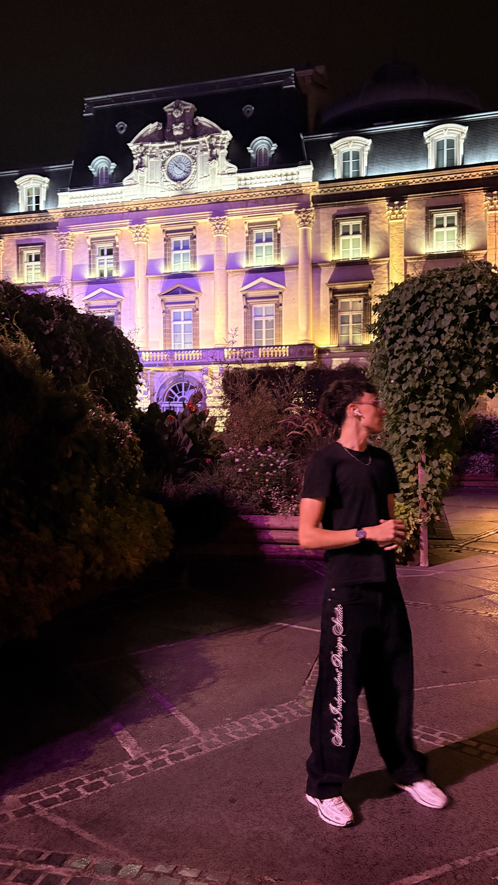

Développeur en formation
Clément Roudier
Étudiant en BUT Informatique, spécialité web, à l'IUT de Clermont-Ferrand.
Passionné par le développement, je conçois des applications web et de bureau, du back-end à l'interface. Rigoureux, autonome et à l'aise en équipe, je cherche à progresser sur chaque projet.
Disponibilité
Expérience · Juin 2026 · 8 semaines
Stage chez SATEL, à Vichy
Un premier contact concret avec le travail en entreprise : reprendre une base de code existante et livrer une fonctionnalité complète.
J'ai ajouté un module CRUD à SatelPlatform, l'application interne de l'entreprise. Le module est développé en TypeScript, avec NestJS côté backend et Angular côté frontend.
Parcours
Mon parcours
-
Baccalauréat général
Lycée St-Pierre de Cusset (Vichy) · Spécialités mathématiques et NSI
-
BUT Informatique
IUT de Clermont-Ferrand · Spécialité web
-
Stage chez SATEL
Vichy · Ajout d'un module à l'application interne SatelPlatform
-
Entrée en 2e année de BUT
Spécialité web
Compétences
Technologies
Langages
Frameworks
Web & outils
En dehors du code
Centres d'intérêt
Basket
3 ans de club